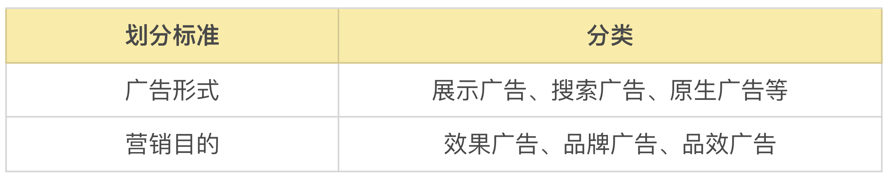

- 00 开篇词 作为一名互联网人，你为什么必须了解广告产品？.md.html
- 01 业务逻辑：广告产品的前世今生和商业模式是怎样的？.md.html
- 02 业务链条：广告主、媒体、第三方等分别如何看待广告产品？.md.html
- 03 头部玩家：从BAT到跳动的字节，广告产品有哪些变化与发展趋势？.md.html
- 04 产品体系：互联网大厂的广告产品存在哪些共性和区别？.md.html
- 05 变现模式：什么样的产品适合采用广告模式变现？.md.html
- 06 产品路线：大厂和小厂的广告产品发展路线有什么区别？.md.html
- 07 计价与效果（上）：如何制定合理的计价方式？.md.html
- 08 计价与效果（下）：如何制定合理的效果评估指标？.md.html
- 09 效果优化：如何一步步从提升曝光量深入到提升销量？.md.html
- 10 流量优化：如何兼顾广告收入和用户体验？.md.html
- 11 物料生产：如何满足广告主的创意需求？.md.html
- 12 精准定向：如何建立一个成熟的用户标签体系？.md.html
- 13 转化优化：互联网大厂如何利用算法优化广告效果？.md.html
- 14 程序化交易：程序化交易是否可以提升广告效果？.md.html
- 15 需求调研：广告产品潜在需求的调研流程是怎样的？.md.html
- 16 平台建设：如何从0到1建立一个完整的广告产品平台？.md.html
- 17 职业发展：新人入行，如何判断自己是否适合做广告产品？.md.html
- 18 团队建设：如何搭建一个高效的广告产品团队？.md.html
- 19 跨团队合作：产研团队和销售端、媒体端、市场端如何合作？.md.html
- 20 产品运营：不同发展阶段如何制定业务目标和运营策略？.md.html
- 21 广告产品彩蛋：课程答疑与推荐书目.md.html
- 结束语 你想要成为什么样的互联网广告产品人？.md.html
- 捐赠
21 广告产品彩蛋：课程答疑与推荐书目
你好，我是郭谊。
不知不觉中，我们的《大厂广告产品心法》专栏已经来到了最后一讲。在前面的20讲中，我用6讲与你分享了广告产品的行业蓝图，用10讲带你深入了解业务实战涉及的方方面面，又用4讲与你沟通了广告产品方向上的职业规划、产品团队内外的建设，还有产品运营的总体规划等等。
在前20讲更新的过程中，我收到了很多用户的反馈：有的提出了自己希望看到的内容，有的第一时间积极回答了实战演练中的问题，也有很多用户朋友向我提出了各种各样的新问题，这些反馈也引发了我更多的思考。我一直在想怎么去回应这些请求与反馈，所以策划了这第21讲的内容。在这一讲中，我会把所有的反馈化成三重惊喜提供给你。
- 第一个惊喜是：推荐广告产品的相关书籍以及行业媒体，为你提供拓展学习的方向，还有跟踪行业动态的源头活水；
- 第二个惊喜是：提供实战演练中的客观题部分的参考答案及解题思路。温馨提醒，还没有看过或自己解答过第7讲、第8讲和第12讲课后习题的朋友，可以先自己解一下题，然后再回来看解题思路和参考答案。
- 第三个惊喜是：在课程更新的过程中，有一些用户提出了很多精彩的问题，我从中选取了典型及精彩的问题，并进行解答，希望能够给你带来更多启发。
彩蛋一：广告产品的相关书籍及行业媒体推介
《计算广告》：广告产品入行必读书
每次有志于在进军广告产品或者在这个领域深造的朋友请我推荐书，我都会首先推荐刘鹏老师和王超老师的这本《计算广告：互联网商业变现的市场与技术》。
刘鹏老师早期从事AI技术的基础研究及应用，后转向广告产品方向，以高级科学家的参与创建雅虎北京研究院，之后历任聚效（MediaV）首席科学家、360商业化首席架构师等。王超老师则是我在百度的同事，是资深的广告算法工程师。两位可以说是中国互联网广告产品的见证人和践行者。
因为两位作者既有扎实的学术功底及技术背景，又长年浸淫在业务实战中，所以这本书从实践出发，系统地介绍计算广告的产品、问题、系统和算法，并且从工业视角对这一领域的具体技术进行了深入地剖析。2015年这本书刚刚上市，就受到了大数据和互联网行业的一致好评，成为了很多互联网公司搭建变现体系时的指导教程。
该书中有部分内容侧重于技术，如果你没有代码基础，读起来可能看起来有些困难。没关系，该书绝大部分内容对于非技术背景的读者还是相当友好的，你可以先跳过看不懂的内容。
《营销理论》：营销理论的工具库
《营销理论》是营销大师菲利普·科特勒（Philip Kotler）的教科书式著作。他是世界上市场行销学的权威之一，被誉为“现代营销学之父”，是许多外国大公司在营销战略和计划、营销组织、整合营销上的顾问。对于营销学来说，菲利普·科特勒的《营销管理》是无可争议的学科奠基著作，也是最被全球学界和业界接受和赞扬的经典教材，被誉为“营销圣经”，而且在过去数十年中一直在不断再版。
我在百度工作期间，为了面向广告客户，更好地整合与推广百度展示广告产品体系，购入该书。厚厚一本，蕴含了很多营销学的经典理论和业务模型。不仅可以在你有业务需求的时候，快速寻找可以参考的方法论，而且也可以让你和你的广告客户，尤其是跨国客户，掌握同一门营销语言，更有利于你站在广告主、广告代理公司的角度去思考产品的发展及推广方向。
《经济学原理》：掌握商业的底层思维
作者格里高利·曼昆（Gregory Mankiw）生于1958年，美国著名经济学家。29岁成为哈佛大学历史上最年轻的终身教授之一，2003年步入论坛，著有《经济学原理》等经典教材。
这本《经济学原理》是世界上首版（首版出版于1998年）最为成功的经济学教科书，这本书中提到的经济学十大原理，回答了三大问题：人们如何做出决策、人们如何相互影响以及整体经济如何运行。这本书主要从供给与需求、企业行为与消费者选择理论、长期经济增长与短期经济波动以及宏观经济政策等角度深入浅出地剖析了经济学家们的世界观。
关于这本书，当然也有很多争论，相信有经济学背景的人会知道一些。但是对于我而言，这本书的微观经济学分册，让我可以站在“理性人”的角度，对于供需、价格、稀缺性、效率等因素有更加深刻的理解。相信你在本专栏的很多课程内容中都会发现我对这些底层思维的应用。
中华广告网（A网）和中国广告网（C网）
中华广告网创建于1997年，是广告行业第一家互联网平台，全面积累了广告产品上下游的资源，建立了各种类型的数据库，在业内以A网著称；中国广告网创建于1999年，是国内享有知名度且规模比较大的广告媒体行业专业网站之一，在业内以C网著称。
A网和C网是中国广告从传统媒体到PC互联网乃至发展至今的知名网站，在它们的网站上，可以看到中国广告发展的痕迹。
广告门
广告门创建于2006年，主要服务于品牌、广告公司、媒体三方及其从业人员，持续关注营销传播产业的动态，每日发布头条+深度文章8～12篇，内容包含业界重大事件、案例分享、人物访谈等，并于年终进行行业盘点。
广告门上可以能够看到广告行业最新的案例，还有很多业界八卦，是了解最新营销案例的好来源。
Morketing
Morketing创建于2014年，逐渐从单一自媒体发展成一个营销人的媒体服务平台，现在的产品包括内容报道、线下活动、研究分析、数据库、线上论坛、视频教程以及行业服务等。
Morketing是和中国移动互联网广告同步兴起的媒体，和广告产品链条上各个模块的头部及有特色的玩家联系很多，所以在上面可以看到关于移动互联网广告产品与技术的最新信息及案例。
彩蛋二：实战演练的参考答案及讲解
07｜计价与效果（上）：如何制定合理的计价方式？
课后习题：
- 广告产品A，计价方式是CPC竞价，过去一个季度广告客户平均出价为0.9元，广告预估点击率为0.9%，过去一个季度，广告产品A的eCPM是多少元？
- 广告产品B，计价方式为CPM合约购买，CPM刊例单价为80元，某广告主通过广告代理公司以刊例价格的5折购买到手，通过广告合同预定了未来一周投放600个CPM，那么，就这一次投放而言，广告产品B的eCPM是多少元？
- 广告产品C，是某App刚开始尝试做广告变现推出的广告产品，找了一家广告代理公司，决定先以CPA的计价方式售卖，尝试一个月后，统计发现：广告客户对CPA的平均出价为78元，平均每10,000名用户看到广告后，有120名用户点击了广告并跳转到广告主的着陆页，之后，其中1名用户有了后续转化的行为。请问，广告产品C在过去一个月里，点击率是多少？转化率是多少？eCPM是多少？
解题思路：
- CPC计价广告的eCPM=广告主对每次广告点击的出价_预估点击率_1000，因此广告产品A的eCPM=0.9*0.9%*1000=0.81（元）。
- CPM计价广告的eCPM=CPM价格，因此广告产品B的eCPM=80*50%=40（元）。
- 广告产品C过去一个月的点击率=120⁄10000=1.2%，转化率=1⁄120=0.83%，CPA/CPS计价广告的eCPM=广告主对于每次转化或购买的出价 * 预估转化率 * 预估点击率 * 1000，因此广告产品C过去一个月的eCPM=78 （1/120） （120/10000） * 1000=7.8（元）。
参考答案：
0.81（元）
40（元）
1.2% 0.83% 7.8（元）
08｜计价与效果（下）：如何制定合理的效果评估指标？
课后习题：
- 你的朋友是食品饮料行业的广告主。她一个月前开始购买百度搜索关键词广告，在“果酱”这个词上，上个月消费了5000元。用户点击广告后会跳转到她的商家页面。经统计，她这个月通过百度搜索关键词广告带来的流量，共销售了100瓶果酱，每瓶利润20元。请问，你朋友上个月投放广告的ROAS是多少？
- 你拿到了竞品的一张广告投放项目数据统计表，其中一行数据如下，请在CPA和ROAS这两格中填上正确的数值。-

解题思路：
- ROAS=广告投放为广告主带来的收入/广告产品的购买费用，因此，这个朋友上个月投放广告的ROAS=20*100⁄5000=0.4，投入大于利润，需要进一步优化。
- 这道题改编自一个真实案例的后台数据。转化成本=花费/总成交笔数=2263.03/433=5.23（元）；ROAS=广告投放为广告主带来的收入/广告产品的购买费用=14371.90⁄2263.03=6.35。只要计算公式正确，回答6或者6.4都算正确。这道题中有很多迷惑性的数据，实际上都用不到。我们在解题时要牢牢把握住基础公式。
参考答案：
0.4
5.23（元） 6.35
12｜精准定向：如何建立一个成熟的用户标签体系？
课后习题：
- 某广告主为了推广自己的产品，在媒体A上投放广告，要求广告受众是生活在一线城市、年龄为25~35岁的女性，购买量为1000个CPM。媒体A使用自身的用户标签和人群定向系统进行广告投放。因为媒体A认为自己标签体系的准确度约为92%。请问A为了实现针对目标人群的有效投放，实际投放了多少个CPM?
- 该广告主自行向第三方数据监测服务公司购买了15万样本的数据。广告投放完毕之后，广告主发现该样本库中有1万个样本被媒体A投放了自己的广告，这其中有8000个样本确实是生活在一线城市、年龄为25~35岁的女性。请问根据该样本库结论，媒体A的人群定向准确性是多少？广告主要求按照第三方监测的结果给A付款。结合上一个问题中A实际投放的CPM数量，广告主愿意支付的CPM数量是多少个？
解题思路：
- 因为媒体A认为自己标签体系的准确度约为92%，所以A为了实现针对1000个目标人群的有效投放，实际投放1000/92%=1087个CPM。此处答案数字请取整数，因为CPM的单位一般没有小数。
- 第三方检测服务公司的样本库中体现的标签准确度=8000⁄10000=80%，因此，广告主如果按照第三方监测的结果给A付款，愿意支付的CPM数量是1087*80%=870。
参考答案：
- 1087（个）
- 870（个）
彩蛋三：课程答疑
用户：效果类广告和展示类广告有什么区别，展示广告和品牌广告之间有什么区别？

作者：展示广告是按广告形式分的，区别于搜索广告、原生广告等，效果广告是按营销目的分的，区别于品牌广告和品效广告。展示广告可能是品牌广告也可能是效果广告，看你的营销目的。展示广告的效果可以追踪，就看这个广告产品本身是否支持以及广告主是否有要求，例如百度的品牌专区，有多少转化（例如销售线索、在线销量）都可以追踪。
用户：我们主要聊的是从媒体侧去对广告收入进行优化，如果是从广告主侧分析呢？因为广告主有选择流量平台的自由，不知道如果广告主想要把自己的预算更好地花出去，可以从什么维度考虑？
作者：广告主优先考虑流量大的平台，因为流量大的平台才有好的预算消耗能力；其次是考虑流量背后的用户与自身目标消费者的匹配度，会选择精准定向广告和配合一些垂直的媒体（例如汽车、母婴）等；另外，也要结合自身预算大小、对成本的要求、对物料格式的要求。
用户：老师能分享一下做频控时 ID-Mapping的解决方案吗？特意搜了一下查到了OneID这么个概念，不是特别理解。
作者：OneID也叫 ID-Mapping，就是将设备ID、手机号、身份证号、邮箱地址、PC端的cookie、账号体系里的用户名等ID，通过算法都映射到统一的ID上。不论用户用什么ID登陆，不论登录的是PC端还是手机App，都能识别到他的一个唯一身份。我们做广告产品时讲ID-Mapping这个词更多。
用户：广告主可以利用媒体平台的DMP能力，搭建出自己的第一方DMP。这部分具体如何执行？
作者：广告主一方面在媒体平台上投广告，可以通过DMP把广告触达、点击、转化人群纳入自己的用户池子；另一方面，可以把自己通过其他途径（如线下门店）获取的CRM用户数据导入DMP，通过ID-Mapping打上媒体平台赋予这些用户的标签，洞察用户，还可以通过Lookalike技术在这个平台上找到更多类似标签的用户，进行广告投放。这样，广告主就搭建了这个平台上的第一方DMP，可以进行用户资产管理、广告投放及优化。
除了这些问题以外，还有一些具体的业务问题。我们来看一下。
用户：一个网站，如果不考虑其他业务，有五百万用户，能够靠广告挣钱吗？一般而言，一年靠广告能挣多少？
作者：这种情况我们不能看用户数，至少得看日活（DAU）。最简单的例子，你只开了一个开屏广告，eCPM假设实收50元，500万DAU，5000000/1000=5000个CPM，假设全卖出去了，当天收入=5000*50=25万。一年的话，你再乘以售出天数。但是，实际上500万用户不可能有500万DAU，一年也不可能满售，建议具体问题具体分析。
用户：非媒体内部的专门做DSP的公司生存空间越来越小，请问这类公司未来的路在哪儿，还是只能是转型吗？另外，长尾媒体是什么？
作者：一般的公司也不会只做DSP，广告营销方面都会做一下，如果客户关系好或技术能力强，还是有一定生存空间的，但是行业本质就是优胜劣汰，发展得不好的会很快被淘汰。当然，其中也有转型做SaaS或其他业务的。
长尾媒体是指流量小的媒体；长尾流量除了指小媒体外，也可以指大媒体中广告售卖尚不充分的流量。
还有用户根据自己的工作或者感兴趣的领域，提了更多和变现有关的问题，我们继续看。
用户：工具类型App产品后续还有生存空间吗？或者说还有没有利润空间，结合您的经验能不能给一些建议呢？
作者：工具型产品当然有生存空间，也有利润空间。首先还是要找到你们的产品定位。在商业化方向上，不要单一依靠广告。墨迹天气19年上市未成功的原因之一就是这个，而美图现在大力发展其他变现模式，也更加健康。
用户：有一些网赚小游戏还有盲盒类的产品，在您看来，这类产品有前景吗？如果要做这类产品您有什么建议？
作者：网赚小游戏的用户被洗过太多轮了，这个模式是利用用户的逐利心理，能否长期发展的关键在于给到用户福利的动作和游戏的核心体验是否能结合得更深更有效，类似我们课程中讲到过的激励视频广告的情况。
盲盒还是个比较新的行业，目前在快速增长中，利用了用户心理中的赌性，短期增长看营销，长期是否能持续发展还是要看是否能打造出独特且有吸引力的IP和产品。总之，一个产品是否能可持续发展，要看是否能满足目标用户的核心需求，以及是否具备有差异性的优势。
总结
好了，今天的三个彩蛋全部“敲开”了。
- 在第一颗彩蛋里，我放上了一些广告产品行业的必读书目和需要关注的网站，希望你能通过这些内容拓展你的知识面，对广告产品行业有更深的理解和更扎实的知识基础；
- 在第二颗彩蛋里，我放上了之前实战演练的解题思路，一定要先自己去做一做再看答案，不要偷懒哦！
- 我在第三颗彩蛋里放上了往期课程里的常见问题，可能在学习的过程中你也有这样的疑惑，那么这个部分的内容会让你知识网络更加清晰。
除了这些问题以外，如果你还有疑问的话，随时可以在评论区提问，我还有其他广告产品从业者会帮助你分析问题，消除疑问。今天的课程对你来说是不是有惊喜和收获呢？希望你能把这节课分享给需要的朋友，我们下节课再见！
© 2019 - 2023 Liangliang Lee. Powered by gin and hexo-theme-book.